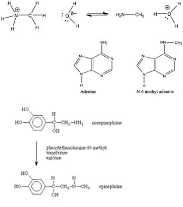

| Chapter 7.4: Nucleophiles and Electrophiles |
While the Lewis acid-base model is more inclusive than the Brønsted-Lowry model, we often use the Brønsted-Lowry model because it is simpler to follow the proton being transferred from one molecule (the acid) to another (the base.) In aqueous solutions, the Brønsted-Lowry theory also allows us to use the concept of pH to quantify acidity. Both Lewis and Brønsted-Lowry models capture an overarching chemical principle, namely that most chemical reactions are initiated by an electrostatic interaction between a positively charged portion of a molecule to a negatively charged portion of another, or the same molecule. As we will see in the next chapter, for reactions between molecules to occur, molecules must collide with one another – they do not react at a distance. |
7.1 Reactions |
When the reacting particles do collide, there has to be some ‘continuous” pathway by which bonds rearrange to produce products. The first step in this pathway often involves Coulombic (electrostatic) interactions between specific regions of the molecules involved. Of course, whether or not such Coulombic interactions are stable depends upon the kinetic energies of the colliding molecules and how, exactly, they collide with one another. Catalysts, which speed reactions, often do so by controlling how molecules collide with, or interact with one another. So for example: in the reaction of H2O and NH3, the positive end of one molecule interacts with the negative end of the other. If we consider this as a Lewis acid-base reaction, the same principle holds true. It turns out that we can profitably consider an wide range of reactions using the principle of coulombic attraction. For example: ammonia (and other nitrogenous compounds) can react with carbon-containing molecules – if the appropriate conditions are met, as shown to the right. In this example the nitrogen is behaving as a Lewis base, donating its lone pair of electrons to the carbon. However it is a little more difficult to see the analogy with a Lewis acid at the carbon site. |
| What we can see though, is that there is an highly electronegative, polarizing group (in this case a bromine atom) bonded to the carbon. The presence of a bromine atom polarizes the C-Br bond, giving the carbon a slight positive charge. This makes the carbon susceptible to attack by the lone pair of the nitrogen. Since carbon does not have an “empty” orbital to accept the lone pair into, and carbon cannot ever form more than four bonds, something has to give. |
| What gives is that the C-Br bond breaks, and the bromine carries away the electrons from the bond with it, producing a bromide ion, Br–. This type of reaction, while is essentially a Lewis acid-base reactions, is usually described using yet another set of terms, probably because these reactions usually belong in the realm of organic chemistry, which was once considered a distinct chemical discipline and organic chemists like to use their own terminology. In these reactions the species with the lone pair (in this case the NH3) is called the “nucleophile” (literally “loving the nucleus”) and is attracted to a positive center of charge. The species that accepts the lone pair of electrons, the CH3Br molecule in this case, is called the “electrophile” (literally electron loving). The species that is released from its bond with the carbon is called the “leaving group”. Leaving groups must be relatively electronegative (as in the case of Br) or stable when associated with an extra pair of electrons – which means that it must be a weak base. Conjugate bases of strong acids are excellent leaving groups because they are stable. |
| If we analyse the reaction above further, we see the nitrogen nucleophile approaching the carbon electrophile, as the bond forms between the C and N, the bond breaks between the C and the Br. The bond breaking and bond making occur simultaneously. Given what we know about water (and aqueous solutions) we might even be so brave as to predict that the product (+NH3CH3 Br–), will rapidly lose a proton in aqueous solution to produce CH3–NH2 and H3O+. This kind of reaction is often refered to as a methylation (a –CH3 group is a methyl group). The product is an N-methylated derivative of ammonia. As we have already seen nitrogen-containing, i.e., nitrogenous compounds, are common in biological systems. Now we also know these compounds can also act as nucleophiles, and methylation of the nitrogen is a quite common occurrence, that can have a range of effects. |
 |
For example: the methylation (and demethylation) of the nitrogenous bases in DNA adenine and cytosine is used in a number of ways influence gene expression as well as to mark newly synthesized DNA strands from older, preexisting DNA strands. At the same time various methylated sequences (such as CpG) are much less stable that the unmethylated form, and so more likely to to mutate. Methylation reactions are quite common in other biological reactions as well; for example epinephrine (adrenaline – the fight or flight hormone) is synthesized in the body by methylation of the related molecule norepinephrine. |
Considering acid-base reactions: pH It is almost certain that you have heard the term pH,
it is another of those scientific terms that have made it into everyday
life, yet what it means exactly is not entirely obvious. For example:
why does an increase in pH correspond to a decrease in “acidity” and
why does pH change with temperature? How do we make sense of pH and
use that information to better understand chemical systems? |
| We use brackets to indicate concentration, and so we write this as [H3O+] = 1 x 10–7 M. Note that this is a very very very small fraction of the total water molecules, given that the concentration of water molecules [H2O] in pure water is 55.4 M. |
Question to answer:
Questions for later:
|
In pure water, every time a hydronium ion is produced, a hydroxide ion must also be formed, so that in pure water at 25 °C, the following equation must be true: [H3O+] = [–OH] = 1 x 10–7 M. It must also be the case that the product of the hydronium and hydroxide ion concentrations, [H3O+][–OH], is, at a particular temperature, a constant. This constant is a property of water, and at 25ºC this constant is 1 x 10–14, and given the symbol Kw,25ºC. So why do we care? Because, when we add an acid or a base to a solution of water at 25ºC, the product of [H3O+][–OH] remains the same, 1 x 10–14. We can use this fact in better understanding the behavior of acids, bases, and aqueous solutions. For many people, dealing with negative exponents does not come naturally, that is, their implications and manipulations can be difficult. Believe it or not, the pH scale was designed to make dealing with exponents easier, but it does require that you understand how to work with logarithms (perhaps an equally difficult task). pH is defined as pH = – log [H3O+].In pure water (at 25ºC), where the [H3O+] = 1 x 10–7 M, pH = 7 (pH has no units). A solution with a higher concentration of hydronium ions than pure water is acidic while a solution with a higher concentration of hydroxyl ions is basic. This leads to the (perhaps) counter-intuitive fact that as acidity [H3O+] goes up, pH goes down. See for yourself, calculate the pH of a solution with a [H3O+] of 1 x 10–2 M, and of 1 x 10–6 M. Moreover, because it is logarithmic, a unit change in pH corresponds to a change in [H3O+] of a factor of 10. The pH scale is commonly thought of as spanning units 1-14, but in fact many (very) strong acid solutions have pH < 1. Pictures of the pH scale (such as the one below) often use colors to indicate the change in pH. This convention began because there are many ?compounds that change color depending on the [H3O+] of the solution in which they are dissolved. For example litmus is red when dissolved in an acidic (pH < 7) solution, and blue when in a basic (pH >7) solution. Perhaps you have notice that when you add lemon juice (which is acidic) to tea, the color changes. Don’t get confused, solutions of acids and bases do not intrinsically differ in terms of color. When there is a color change, it depends on the nature of molecules dissolved in the solution; you might even feel able to suggest how changes in pH could effect molecular structure, and so the interactions between molecules and light (a topic we hope to return to in chapter 10.) |
| It is important to note that at 37 ºC the value of Kw is different - [H3O+][–OH] = 2.5 x 10–14 and therefore the pH is 6.8, but (weirdly) this does not mean that the solution is acidic, since [H3O+] = [–OH]. |
| While the effect is small it is significant and it means that a pH of 7 does not always mean that a solution is acidic (it depends on the temperature.) This is particularly important when the concept of pH is applied in physiological systems, since the body temperature is (usually) not at room temperature. |
Question to answer:
|
| Now let us consider what happens when we add a Brønsted-Lowry acid to water. For example if we prepare a solution of 0.10 M HCl (that is, we dissolve 0.10 mol HCl (g) in enough water to make 1 liter of solution), the reaction that results (see above) contains more hydronium ion (H3O+). |
| Now if we measure150 the pH of the solution of 0.10 M HCl we find that it is 1.0 pH units. If we convert back to concentration units from pH (if pH = – log [H3O+], then [H3O+] = 10–pH), we find that the concentration of H3O+ in 0.10 M HCl is 0.10 M. This makes sense, since as we previously discussed, the HCl completely dissociates into Cl- and H+ (associated with water molecules). |
There are no (or very few) molecules of HCl in the solution. The table above gives the concentrations of all the species present both before and after reaction. There are several things to notice about this table. Since the measured pH = 1 and we added 0.1 M (or 10-1 M) HCl it is reasonable to assume that all the HCl dissociated and that the vast majority of the H3O+ came from the HCl. We can ignore the H3O+ present initially in the water. Why? Because it was 6 orders of magnitude (0.0000001)(10-7) smaller than the H+ derived from the HCl (10-1). It is rare to see pH measurements with more than three significant figures, so the H3O+ originally present in the water does not have a significant effect on the measured pH value. Although we are not (generally) concerned about the amount of hydroxide – it
is worth noting that |
Question to answer:
|
Making sense of vinegar (and other acids): Now let us consider another another common acid, acetic acid. If wine is left open to the air, it will often begin to taste sour, because the ethanol in wine reacts with oxygen in the air and forms acetic acid, which belongs to a family of organic compounds known as carboxylic acids. It has one acidic proton, attached to the oxygen. |
If we measure the pH of a 0.10 M solution of acetic acid, we find that
it is about 2.8. The obvious question is why the pH of a 0.1M
solution of acetic acid is different from the pH of 0.1M solution
of hydrochloric acid? The explanation lies in the fact that acetic
acid (CH3COOH) does not dissociate completely into
CH3CO2– and H3O+ when
it is dissolved in water. A pH of 2.8 indicates that the [H3O+]
= 10–2.8; this number can converted into 1.6
x 10–3
M. About 1.6% of the added acetic acid is ionized (a form known
as acetate ion, CH3COO–), the rest is in the
protonated form (acetic acid, CH3COOH). That said, the specific
molecules that are ionized changes all the time - protons are
jumping on and off (or better put constantly transferring from
one oxygen to another). You can think of this process in another
way; it is the system that has a pH, not individual molecules.
If we were able to look at a single molecule of acetic acid in
the solution, we would find that it would be ionized 1.6% of
the time. This may seem a weird way to think about the system,
but remember, many biological systems (e.g bacteria) are quite
small, with a volume of only a few cubic microns or micrometers
(a cubic micron is a cube 10–6 m on a side) and may contain
a rather small number of any one type of molecule. It can be
useful to think not of the bulk behavior of these molecules (since
their are so relatively few of them), but the behavior of individual
molecules, averaged over time. We often indicate the extent to
which a reaction occurs through the lengths of the arrows between
the two forms the un-ionized (neutral) and ionized. Again, in
an aqueous solution of acetic acid molecules, that means most
(98.4%) of the molecules are in the un-ionized form and for any
particularly molecule, it will be un-ionized most (98.4%) percent
of the time. |
Many biological molecules contain parts (called moieties) that behave as weak acids or weak bases. The pH of the solution in which these molecules find themselves will therefore influence the extent to which these moieties are ionized. Whether a moiety is ionized or not can dramatically influence a biomolecule’s behavior, that is, its structure and its interactions with other molecules. It is because of this fact that changes in pH can have dramatic effects on biological system; for example, if the pH of your blood changes by less than +0.3 or –0.3 one pH unit, you are likely to die. Biological systems spend much of the energy they use maintaining a constant pH (typically around 7.35-7.45.) In addition, the pH within your cells is tightly regulated, and can influence cellular behavior. |
7.1
Reactions |
Question to answer:
|
| 28-Jun-2012 |